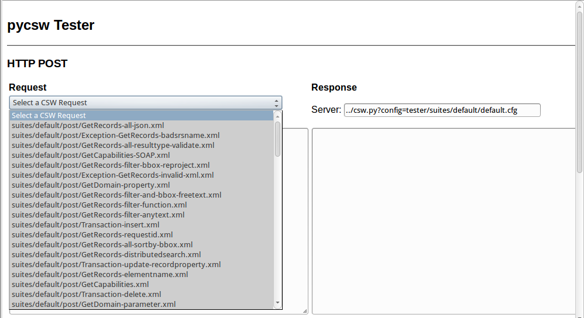
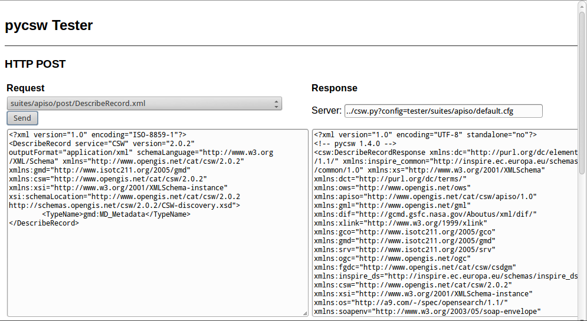
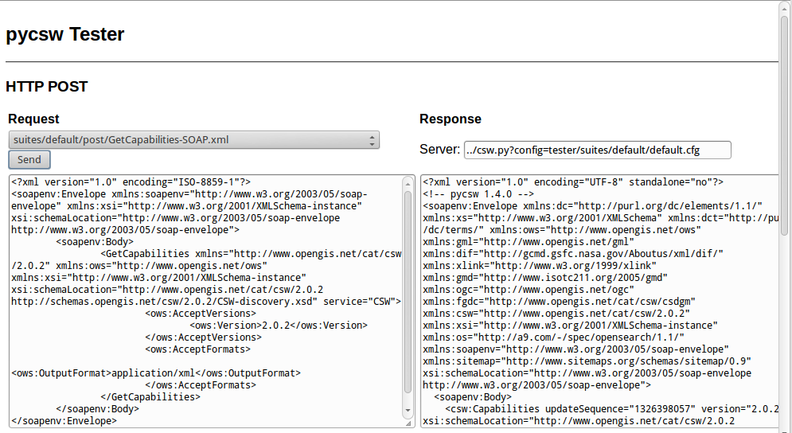
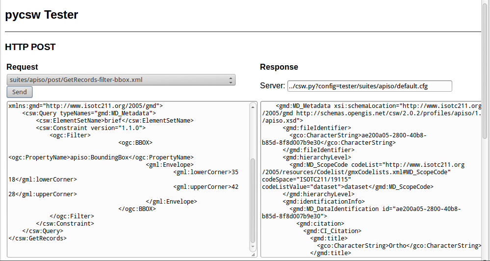
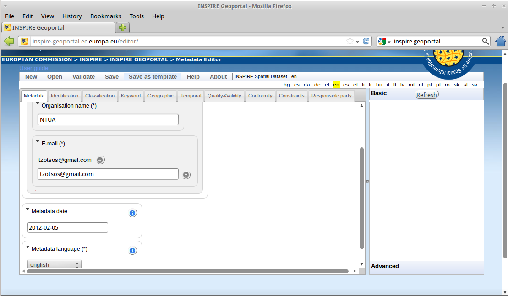
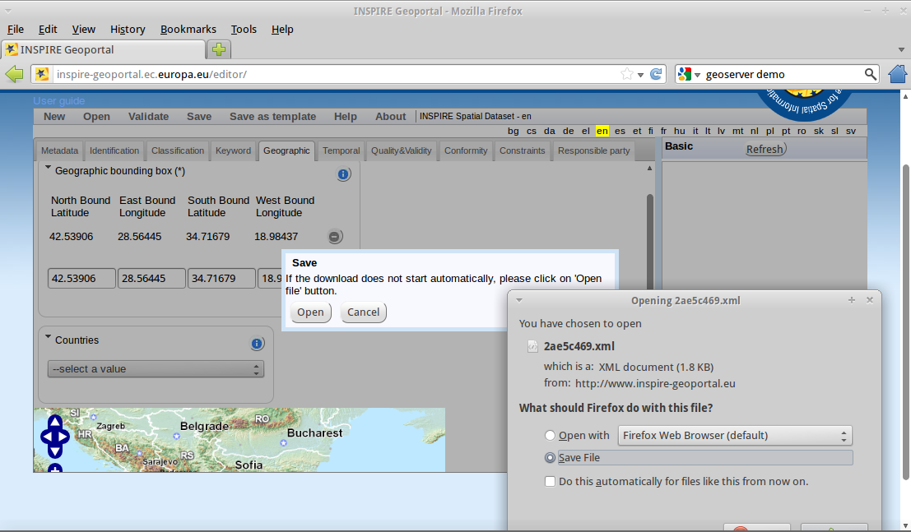

pycsw Quickstart¶
pycsw is an OGC CSW server implementation written in Python. pycsw allows for the publishing and discovery of geospatial metadata. Existing repositories of geospatial metadata can be exposed via OGC:CSW 2.0.2 or OGC:CSW 3.0.0.
Contents
Running the tester application¶
To run the pycsw tester, use the pycsw launcher from the Web Services group, or open Firefox and navigate to http://localhost/pycsw/tests/index.html:
{kind=link}
By selecting the left drop-down list, the user can see various predefined POST requests, encoded as XML, that can be sent to pycsw:
{kind=link}
For example, by selecting „apiso/DescribeRecord“, and pushing the „Send“ button, a description of the ISO Application Profile record is presented on the right panel:
{kind=link}
By selecting „GetCapabilities-SOAP“ and pushing the „Send“ button, a SOAP request is sent to the server to advertise their web service capabilities:
{kind=link}
Also, the user can search for data records, performing a spatial bounding box query, by selecting „GetRecords-filter-bbox“ and editing the coordinates in the XML request:
{kind=link}
The user can go through all the available requests and perform various requests from this testing application.
Capabilities Document and Configuration¶
The capabilities of the pycsw installation can be found at http://localhost/pycsw?service=CSW&version=2.0.2&request=GetCapabilities. If you just use http://localhost/pycsw you will get the capabilities document for CSW 3.0.0, since that is the latest version supported.
To edit the web service metadata, included in the capabilities document, the user can modify the file /etc/pycsw/default.cfg under the tag [metadata:main].
If the user wants to enable INSPIRE Discovery Service support, the metadata under the tag [metadata:inspire] has to be filled in and the enabled property has to be set to true.
For full functionality and configuration options, please consult the documentation on the pycsw website.
Metadata Creation¶
Metadata files for a spatial dataset or a spatial web service can be created through the open source implementation of inspire directive for metadata, European Open Source Metadata Editor (EUOSME). This application can be found at http://inspire-geoportal.ec.europa.eu/editor/. Source code is available at https://joinup.ec.europa.eu/svn/euosme/trunk
The user fills the mandatory metadata fields going through the application tabs, adding information like the name of the data owner, keywords, resource location on the web, geographic location (using a bounding box or the name of a country) etc.
{kind=link}
After the user has added all the information available, must push the validation button on top of the page, so that a check to be performed for consistency with the INSPIRE directive.
{kind=link}
After a sucessful validation, the XML file can be saved to the local disk and viewed through a text editor or a browser.
Loading Metadata¶
Metadata Repository Setup¶
pycsw supports the following databases:
- SQLite3
- PostgreSQL (PostGIS optional)
- MySQL
In OSGeoLive, a simple SQLite setup has been implemented. The database can be found in /usr/share/pycsw/tests/suites/cite/data/records.db
Create new database¶
In order to create a new SQLite database we need to:
Edit
/etc/pycsw/default.cfg:[repository]
- database: the full file path to the metadata database, in database URL format (see http://docs.sqlalchemy.org/en/latest/core/engines.html#database-urls)
- table: the table name for metadata records (default is
records)
Setup the database:
$ sudo pycsw-admin -c setup_db -f /etc/pycsw/default.cfg
This will create the necessary tables and values for the repository.
The database created is an OGC SFSQL compliant database, and can be used with any implementing software. For example, to use with OGR:
$ ogrinfo /path/to/records.db
INFO: Open of 'records.db'
using driver 'SQLite' successful.
1: records (Polygon)
$ ogrinfo -al /path/to/records.db
# lots of output
Importing Metadata¶
$ sudo pycsw-admin -c load_records -f /etc/pycsw/default.cfg -p /path/to/records -r
This will import all *.xml records from /path/to/records into the new database and configure the repository to expose queryables as per Table 53 of OGC:CSW.
Data Discovery through QGIS MetaSearch Plugin¶
Start QGIS from the Desktop GIS group and click on the MetaSearch button (CSW icon)

Add the pycsw server by pressing the „New“ button and type in http://localhost/pycsw/

The user can add some default servers using the „Add default servers“ button and also get the capabilities of the server using „Server info“ button

Perform search using the catalogue, either by a string value or with a bounding box

Things to try¶
- Try to discover data through the Tester application by setting the appropriate requests eg. any text search with the string „imagery“ leads to discovering the xml data created previously by EUOSME
{kind=link}
- Try to discover data through the Python OWSLib CSW interface.
- Try to discover data from GeoNode, which is also included in OSGeoLive and uses pycsw as the default CSW engine.
What Next?¶
For more information on pycsw, please consult the documentation on the pycsw website.